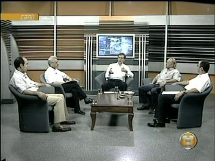
31
Temmuz 2005, Teknoloji TV,
Doç. Dr. Talat Çiftçi'nin sunuculuðunu
yaptýðý Teknoforum Programý
Konu: Dünya'da ve Türkiye'de CAD/CAM/CAE teknolojileri.
Soldan saða konuklar:
* Erkut Neðiþ, Cadem * Dr. Tarýk Öðüt, FÝGES *
Bahadýr Onat, ARPROM
* Doç. Dr. Haydar Livatyalý - ÝTÜ
Makine Müh. Böl.
Videosunu izlemek için týklayýnýz
|
|
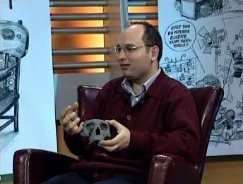
|
31-03-2005,
Ýrfan Sayar ile Doç. Dr. Talat Çiftçi'nin sunduðu, Teknoloji
Televizyonu'nda yayýnlanan Teknosfer
Programý
Videosunu izlemek için týklayýnýz
|
|
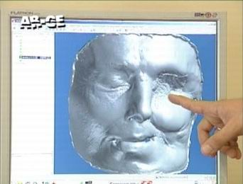 |
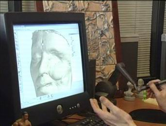 |
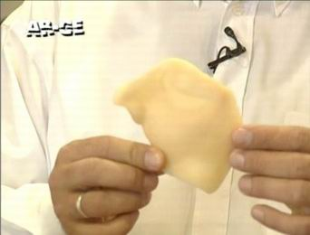 |
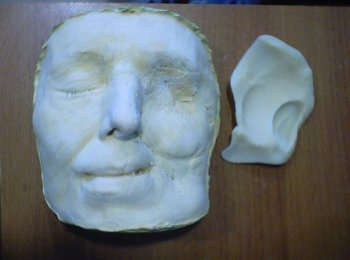 |
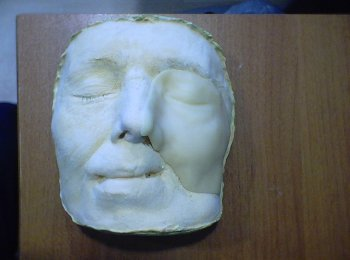 |
16-05-2005, Teknoloji
Televizyonu'nda yayýnlanan AR-GE
Programý'nda Cadem A.Þ.'de, Plastik Cerrah Opr. Dr. Gürsel Turgut ile birlikte gerçekleþtirilen yüz protezine ait bilgisayar destekli tasarým, modelleme ve imalat çözümlerine ait bir sunum.
Videonun tamamýný izlemek için týklayýnýz |
|
|
|
|
|
17-05-2003,
Konya Hilton Oteli
Selçuk Üniv. Paneli; Bilim
kurgudan gerçeðe, Saðlýk Sektöründe Bilgisayar Destekli
Tasarým...
|
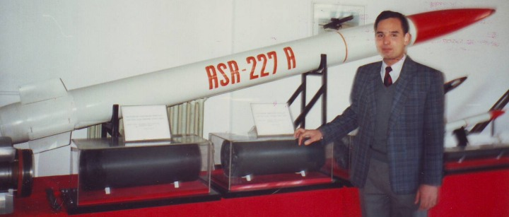
TÜBÝTAK / SAGE, 1990 - ASR 227 A - 227mm kalibre, 30km menzilli alan savunma roketi...
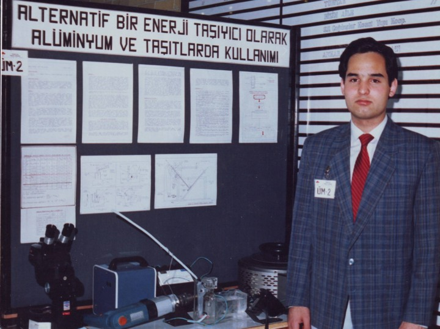
TÜBÝTAK Üniversiteler Arasý Mühendislik Proje Yarýþmasý Sergisi, Ankara, Haziran 1989
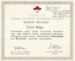
Birincilik belgesi
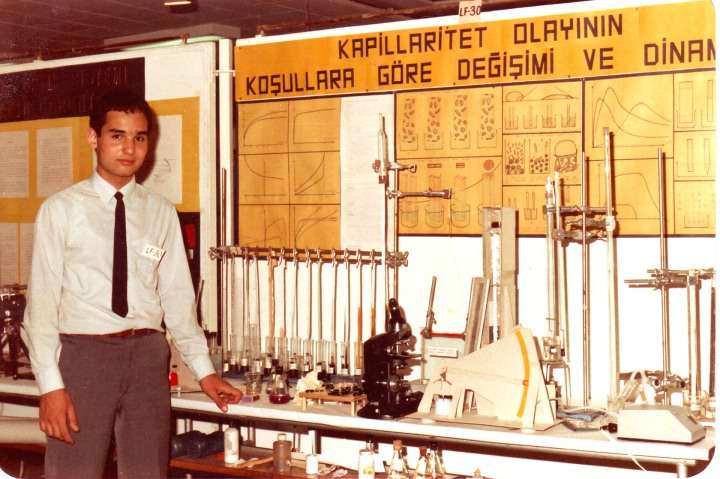
TÜBÝTAK Liseler arasý Fizik Proje Yarýþmasý Sergisi, Ankara, 1984
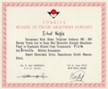
Birincilik belgesi |